| Halveringstid for 137-Barium. | 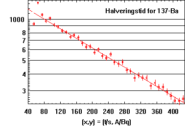 |
| Afkøling af fiksersalt. | 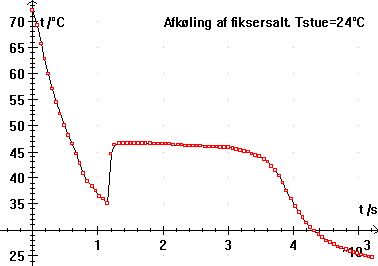 |
| Boyle Mariottes lov. | 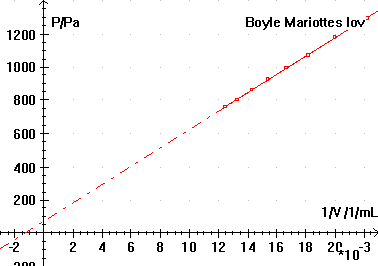 |
| Op- og afladning af kondensator.
Se LabPro, CBL 2, Oscilloskoper |
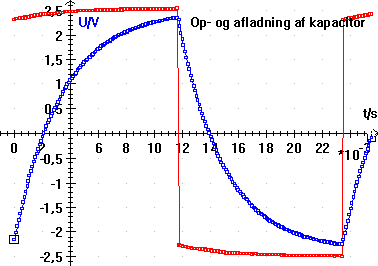 |
| Afladning af batteri. | 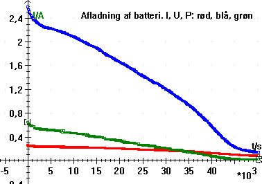 |
| Laplaces lov.
Se multimetre og vægte |
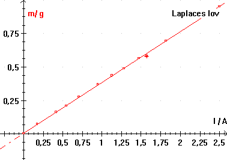 |
| Pt1000 resistor fra Danfoss termostat.
Se multimetre og termometre |
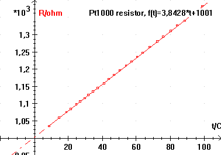 |
| Frack og Hertz forsøg. | 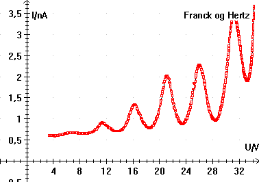 |
| Den hoppende bold. | 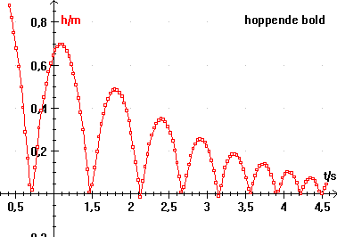 |
| Den hoppende bold. Energi er beregnet for forsøget ovenfor. | 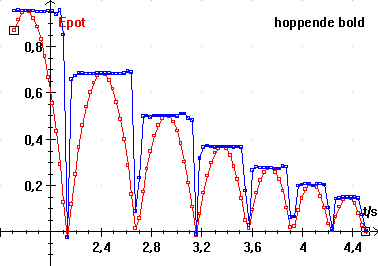 |
| Absorbans i Permanganat. | 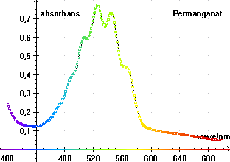 |
| Absorbans i grønalge. | 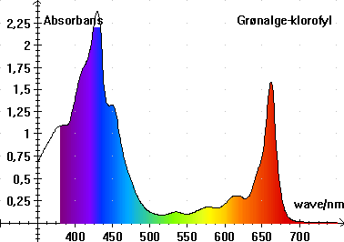 |
| Se DiVA spektrometer | 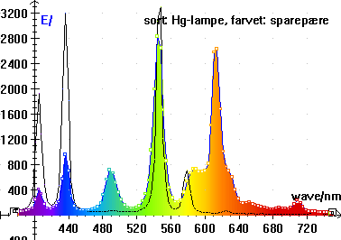 |
| Spektrum af sparepære. Se større billede nederst på
siden.
Se analyse i Datalyse af spektre optaget med digitalkamera |
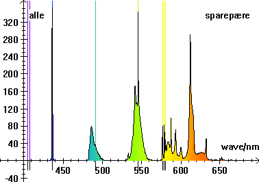 |
| Klaver: c = 440 Hz.
Se lydkort |
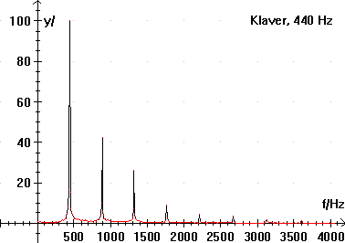 |
| Resonans i paprør.
Se lydkort |
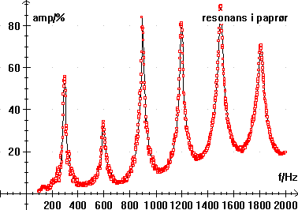 |
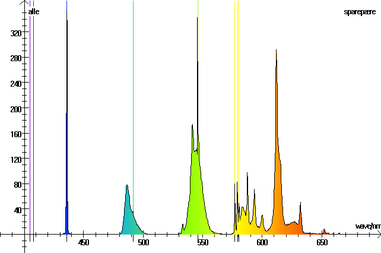
Se analyse i Datalyse af spektre optaget med digitalkamera. Bemærk, at det digitale billede har væsentlig bedre opløsning end DiVA.